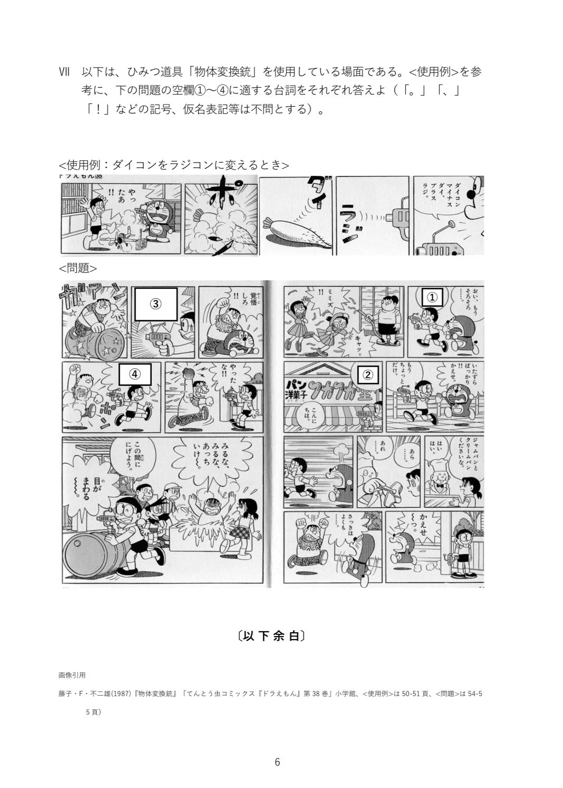

* {
box-sizing: border-box;
margin: 0;
padding: 0;
}
body {
font-family: -apple-system, BlinkMacSystemFont, "Segoe UI", Roboto, "Helvetica Neue", Arial, sans-serif;
background-color: var(--bg-color);
color: var(--text-color);
line-height: 1.6;
padding: 20px 12px;
}
.container {
max-width: 600px;
margin: 0 auto;
}
header {
text-align: center;
margin-bottom: 20px;
padding: 16px;
background: var(--main-color);
color: #FFFFFF;
border-radius: 12px;
}
h1 {
font-size: 1.3rem;
}
h2 {
font-size: 1.1rem;
margin-bottom: 12px;
border-bottom: 2px solid var(--main-color);
padding-bottom: 4px;
}
.card {
background: var(--card-bg);
border-radius: 12px;
padding: 20px;
box-shadow: 0 2px 8px rgba(0,0,0,0.05);
margin-bottom: 20px;
}
.question-block {
margin-bottom: 24px;
padding-bottom: 16px;
border-bottom: 1px dashed #eee;
}
.question-block:last-child {
border-bottom: none;
}
.q-title {
font-weight: bold;
margin-bottom: 10px;
color: var(--text-color);
}
.reading-box {
background: var(--bg-color);
padding: 14px;
border-radius: 8px;
margin-bottom: 16px;
font-size: 0.95rem;
border-left: 4px solid var(--main-color);
}
.q-image {
width: 100%;
height: auto;
border-radius: 8px;
margin-bottom: 16px;
border: 1px solid #ddd;
}
.text-input {
width: 100%;
padding: 12px;
font-size: 1rem;
border: 2px solid var(--main-color);
border-radius: 8px;
outline: none;
background-color: var(--card-bg);
color: var(--text-color);
transition: border-color 0.2s;
}
.text-input:focus {
border-color: var(--accent-color);
}
.options-grid {
display: flex;
gap: 10px;
margin-top: 8px;
}
.opt-btn {
flex: 1;
padding: 12px;
border: 2px solid var(--main-color);
background-color: var(--card-bg);
color: var(--main-color);
font-size: 1.1rem;
font-weight: bold;
border-radius: 8px;
cursor: pointer;
transition: all 0.2s;
}
.opt-btn.selected {
background-color: var(--main-color);
color: var(--card-bg);
}
.options-vertical {
display: flex;
flex-direction: column;
gap: 8px;
margin-top: 8px;
}
.opt-btn-v {
text-align: left;
padding: 12px 16px;
border: 2px solid var(--main-color);
background-color: var(--card-bg);
color: var(--text-color);
font-size: 1rem;
border-radius: 8px;
cursor: pointer;
}
.opt-btn-v.selected {
background-color: var(--main-color);
color: var(--card-bg);
}
select.tool-select {
width: 100%;
padding: 12px;
font-size: 1rem;
border: 2px solid var(--main-color);
border-radius: 8px;
margin-top: 8px;
outline: none;
background-color: var(--card-bg);
color: var(--text-color);
}
.btn-submit {
width: 100%;
padding: 16px;
background-color: var(--main-color);
color: var(--card-bg);
border: none;
border-radius: 8px;
font-size: 1.1rem;
font-weight: bold;
cursor: pointer;
margin-top: 10px;
}
.btn-submit:hover {
background-color: var(--text-color);
}
.self-score-select {
padding: 8px;
font-size: 1rem;
border-radius: 6px;
border: 1px solid var(--main-color);
margin-top: 6px;
}
.model-answer-box {
background-color: #f0f4ff;
border: 1px solid var(--main-color);
padding: 10px;
border-radius: 6px;
margin: 8px 0;
font-size: 0.9rem;
}
.result-section-title {
font-size: 1.1rem;
font-weight: bold;
margin: 20px 0 10px;
padding-bottom: 4px;
border-bottom: 2px solid var(--main-color);
color: var(--text-color);
}
.result-item {
padding: 12px;
border-radius: 8px;
margin-bottom: 12px;
font-size: 0.95rem;
border: 2px solid var(--main-color);
}
.result-correct {
background-color: var(--main-color);
color: var(--card-bg);
border-color: var(--main-color);
}
.result-incorrect {
background-color: var(--card-bg);
color: var(--main-color);
border-color: var(--main-color);
}
.result-incorrect .res-badge {
background-color: var(--main-color);
color: var(--card-bg);
}
.result-incorrect strong,
.result-incorrect div {
color: var(--text-color);
}
.res-badge {
font-weight: bold;
display: inline-block;
padding: 2px 8px;
border-radius: 4px;
background-color: rgba(255, 255, 255, 0.3);
color: var(--card-bg);
font-size: 0.8rem;
margin-bottom: 4px;
}
.score-banner {
text-align: center;
padding: 20px;
font-size: 1.4rem;
font-weight: bold;
margin-bottom: 20px;
border-radius: 12px;
background-color: var(--main-color);
color: var(--card-bg);
}
.score-banner.pass {
background-color: var(--accent-color);
color: var(--text-color);
}
.nav-btn {
display: block;
text-align: center;
padding: 14px;
background-color: var(--main-color);
color: var(--card-bg);
text-decoration: none;
font-weight: bold;
border-radius: 8px;
margin-top: 24px;
}
問1. のび太のペットはペットが嫌いである。
問2. 「二十世紀のおととのさま」は、のび太がおとのさまになる話である。
問3. ドラえもんの座高は129.3cmである。
問4. ドラミちゃんは、ひげが生えている。
問5. スモールライトの効力には時間制限がある。
問1. のび太が幼稚園のころに毎日一緒に遊んでいた、栗色の髪をした外国人みたいな女の子は誰か。
問2. のび太が住む町は、東京都の何区にあるか。
問3. 「大予告・地球の滅びる日」にて、のび太とスネ夫が予言書と勘違いした物の正体は何か。
問4. 「へいやいっぱいの大ドラ焼き」ができるきっかけとなったひみつ道具は何か。
問5. 「虹のビオレッタ」とは何か。
問6. 「しんじゅ製造アコヤケース」にて、真珠になってしまったのは誰か。
問7. 「タイムふろしき」にて、スネ夫のママはタイムふろしきを何に対して使用したか。
問8. 「雪山のロマンス」にて、のび太がした忘れ物は何か。
問9. 「しあわせトランプの恐怖」にて、宝くじに当選したのは誰か。
問10. スネ夫がペットクリームを使ってペットにした物は何か。
問1. 「宝くじ大あたり」にて、のび太のパパは一等の当たりくじを買っていたが、当選金を受け取ることはできなかった。それはなぜか。
問2. 「火災予定報知ベル」にて、ポイ捨てしたタバコが原因で自宅を焼いてしまった男性は、反省して何をしたか。
問3. 「モーゼステッキ」にて、のび太からステッキを奪って川底の探索を始めたジャイアンとスネ夫は、その後どうなったかについて、理由も含めて答えよ。
問4. 「ホームメイロ」を使ったことで、家の中で迷子になりうろたえてしまったのび太たちは、どのようにして助かったか答えよ。
問5. 「な、なんと!! のび太が百点とった」にて、「ピーアール」の効果がなくなった後、百点のテストを見つけたのび太のママは、どのような反応をしたか答えよ。
問1 (1)
問1 (2)
問1 (3)
問1 (4)
問1 (5)
問1 (6)
問1 (7)
問2. 地下の「のび太国」における各登場人物の役職について、適切なものを選び記号で答えよ。

分野別成績・回答結果一覧
トップ一覧へ戻る